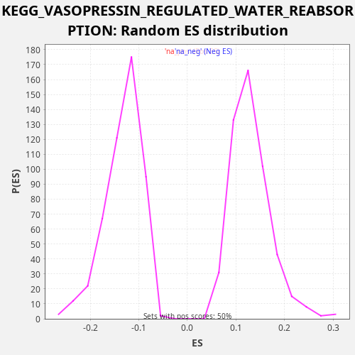

Profile of the Running ES Score & Positions of GeneSet Members on the Rank Ordered List
The same image in compressed SVG format
| Dataset | CCLE |
| Phenotype | NoPhenotypeAvailable |
| Upregulated in class | na_pos |
| GeneSet | KEGG_VASOPRESSIN_REGULATED_WATER_REABSORPTION |
| Enrichment Score (ES) | 0.38113862 |
| Normalized Enrichment Score (NES) | 2.912836 |
| Nominal p-value | 0.0 |
| FDR q-value | 0.0 |
| FWER p-Value | 0.0 |
| SYMBOL | RANK IN GENE LIST | RANK METRIC SCORE | RUNNING ES | CORE ENRICHMENT | |
|---|---|---|---|---|---|
| 1 | CREB3L1 | 381 | 0.070 | 0.0090 | Yes |
| 2 | CREB3L3 | 634 | 0.020 | 0.0235 | Yes |
| 3 | AVPR2 | 846 | 0.011 | 0.0396 | Yes |
| 4 | DYNC1I1 | 1226 | 0.004 | 0.0487 | Yes |
| 5 | DYNLL2 | 1919 | 0.001 | 0.0447 | Yes |
| 6 | RAB5B | 2221 | 0.001 | 0.0571 | Yes |
| 7 | RAB5A | 2350 | 0.001 | 0.0767 | Yes |
| 8 | DCTN2 | 2976 | 0.000 | 0.0755 | Yes |
| 9 | DCTN5 | 2991 | 0.000 | 0.0999 | Yes |
| 10 | DYNC1H1 | 3009 | 0.000 | 0.1242 | Yes |
| 11 | PRKACB | 3054 | 0.000 | 0.1473 | Yes |
| 12 | DYNC1LI1 | 3429 | 0.000 | 0.1567 | Yes |
| 13 | DCTN4 | 3586 | 0.000 | 0.1751 | Yes |
| 14 | CREB5 | 3940 | 0.000 | 0.1853 | Yes |
| 15 | RAB11A | 4369 | 0.000 | 0.1924 | Yes |
| 16 | DCTN1 | 4633 | 0.000 | 0.2063 | Yes |
| 17 | ARHGDIB | 4827 | 0.000 | 0.2232 | Yes |
| 18 | DYNC1I2 | 4977 | 0.000 | 0.2420 | Yes |
| 19 | CREB3 | 5352 | 0.000 | 0.2513 | Yes |
| 20 | ARHGDIA | 5393 | 0.000 | 0.2746 | Yes |
| 21 | VAMP2 | 5648 | 0.000 | 0.2890 | Yes |
| 22 | PRKACA | 5882 | 0.000 | 0.3042 | Yes |
| 23 | DYNC1LI2 | 5904 | 0.000 | 0.3283 | Yes |
| 24 | RAB11B | 6296 | 0.000 | 0.3369 | Yes |
| 25 | RAB5C | 6375 | 0.000 | 0.3587 | Yes |
| 26 | NSF | 6436 | 0.000 | 0.3811 | Yes |
| 27 | STX4 | 7425 | 0.000 | 0.3647 | No |
| 28 | DYNLL1 | 8396 | 0.000 | 0.3490 | No |
| 29 | ADCY9 | 9528 | 0.000 | 0.3266 | No |
| 30 | CREB1 | 10957 | -0.000 | 0.2917 | No |
| 31 | DYNC2H1 | 12654 | -0.000 | 0.2456 | No |
| 32 | PRKX | 13123 | -0.000 | 0.2510 | No |
| 33 | GNAS | 13770 | -0.000 | 0.2489 | No |
| 34 | ADCY6 | 14654 | -0.000 | 0.2368 | No |
| 35 | CREB3L4 | 15238 | -0.000 | 0.2374 | No |
| 36 | CREB3L2 | 15575 | -0.000 | 0.2483 | No |
| 37 | DYNC2LI1 | 17188 | -0.000 | 0.2057 | No |
| 38 | ADCY3 | 17405 | -0.000 | 0.2216 | No |
| 39 | DCTN6 | 18632 | -0.001 | 0.1952 | No |
| 40 | AQP3 | 20773 | -0.006 | 0.1305 | No |

{kind=link}
{kind=link}